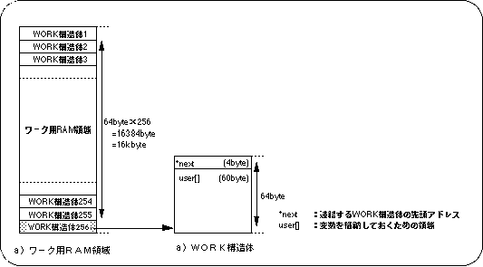
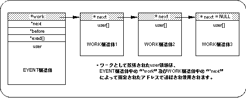
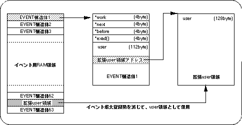

Return to previous page | Return to menu | Go to next page
When writing a program using event processing, the variable group (structure) used by the function executed as an event may not fit in the user area (112 bytes) of the event.
In such a case, SGL can be used by expanding the user area.
There are two ways to expand the user area: a method that uses a dedicated extension area called work, and a method that acquires an extended area of the same size as the EVENT structure from the event RAM area.
In SGL, the user area extension dedicated area called work can be used, and the user area of the EVENT structure can be extended.
The work is defined as a WORK structure (64 bytes) in the work RAM area, and up to 256 works can be used.
The size of the user area that can be expanded per work is 60 bytes.
The remaining 4 bytes of the WORK structure are used for addressing the linked WORK structures.

The members of the WORK structure are as follows.
* next: The start address of the WORK structure to be linked as a chain structure. If there is no subsequent work as a chain structure, NULL is assigned. user []: Extended user area (60 bytes).
The work acquired as the WORK structure is linked by substituting the start address of the WORK structure for “* work” in the EVENT structure to form a chain structure.
In addition, the user can further expand the user area by acquiring the work again in the WORK structure.
At this time, the work to be linked can be made into a chain structure by substituting the start address of the WORK structure to be linked to “* next” in the WORK structure.
When there is no WORK structure that follows as a chain structure, NULL is assigned to “* next”.

To use work in SGL, use library functions “slGetWork” and “slReturnWork”. “SlGetWork” is used to acquire a work, and “slReturnWork” is used to release a work.
The work does not necessarily need to form a chain structure using "* work" and "* next", and the start address of the WORK structure to be linked can be stored in the user area.
However, the work connected by “* work” and “* next” is also released / released to the system at the same time by releasing the event, but the work connected from the user area releases the event. Even release of the WORK structure is not performed.
For this reason, the WORK structure linked from the user area must be returned to the system and released with the library function “slReturnWork” when the event is released.
If the size of one user area to be expanded is insufficient for the WORK structure (60 bytes), a user area of the same size (128 bytes) as the EVENT structure can be secured from the event RAM area.
However, since the area allocated for one event is originally used as the user area, the maximum number of events that can be registered is reduced accordingly.

Use the library functions “slGetEvent” and “slReturnEvent” to extend the user area of the EVENT structure using the event RAM area in SGL. “SlGetEvent” is used to secure the user area, and “slReturnEvent” is used to release the user area.